Promoters, enhancers, insulators and transcription factors
Chromatin marks tell you where the regulatory DNA is. This lecture is about what that DNA is and who reads it: short sequence elements (promoters, enhancers, silencers, insulators) and the sequence-specific transcription factors (TFs) that bind them.
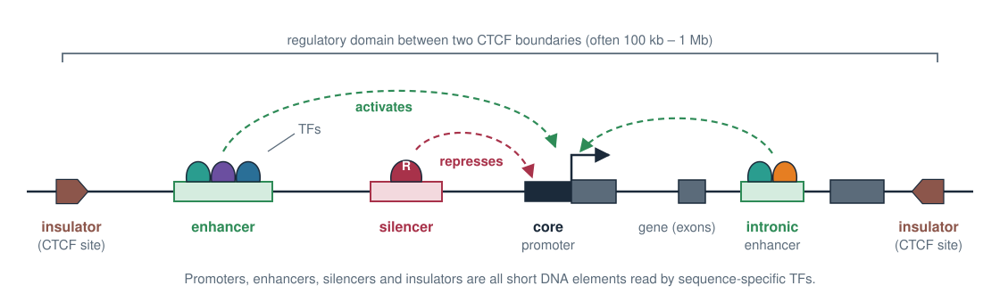
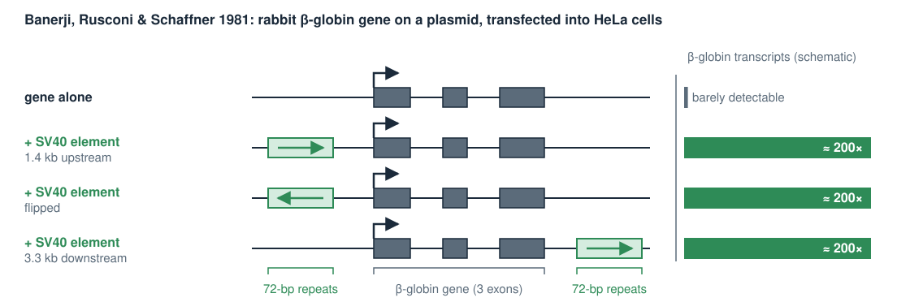
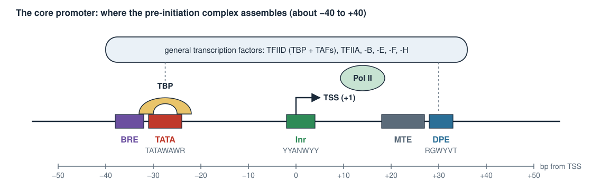
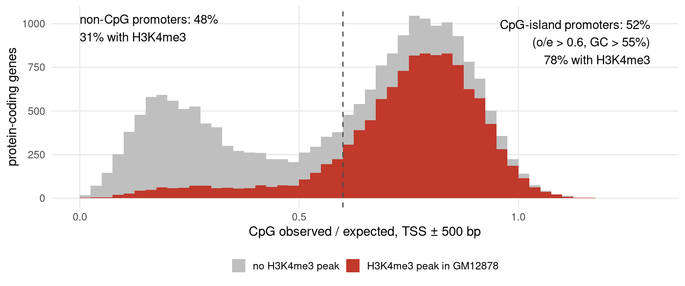
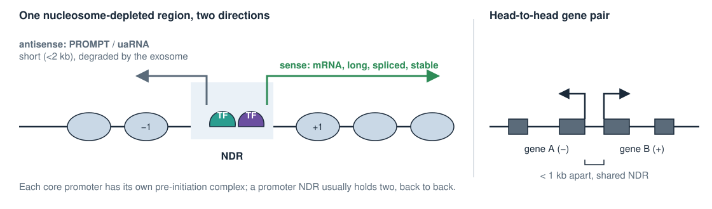
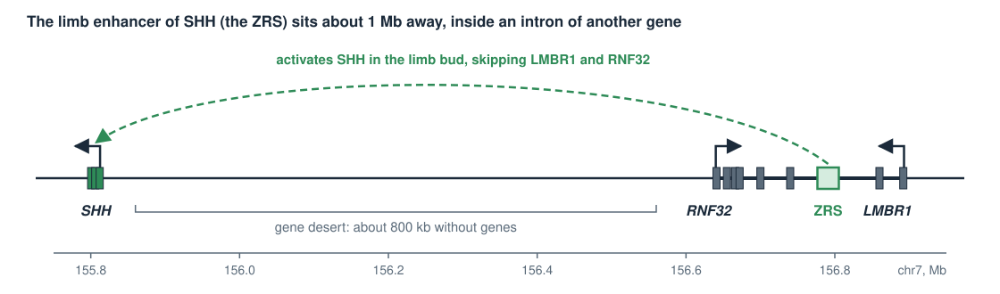
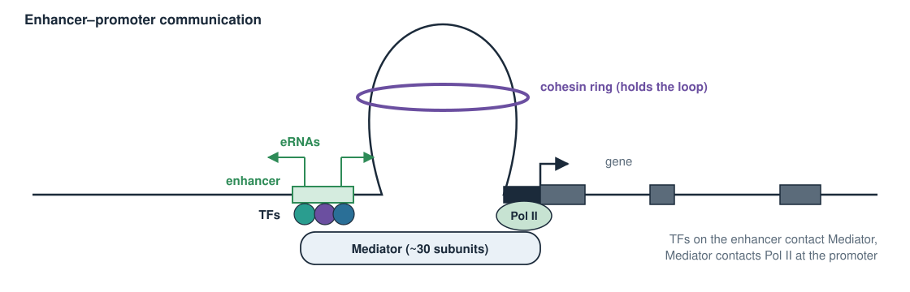
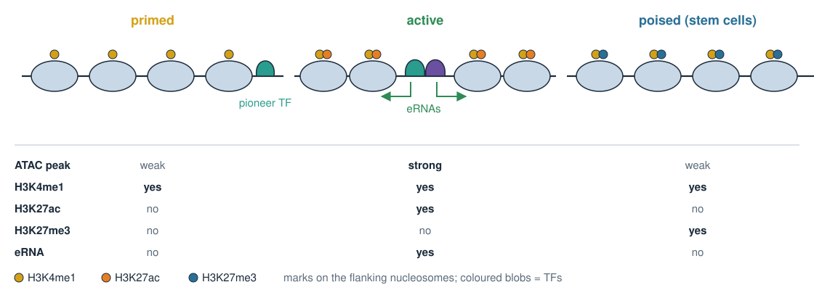
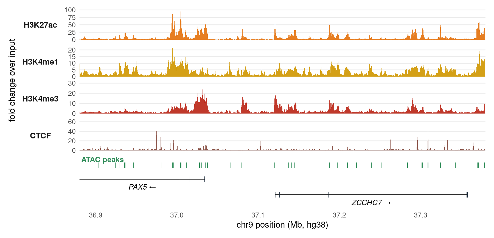
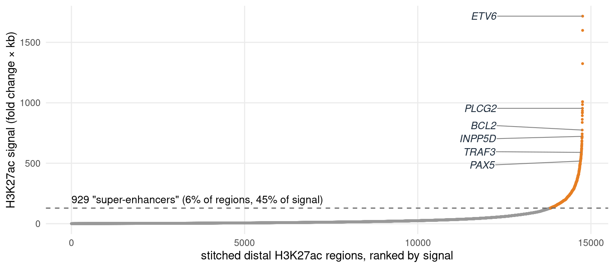
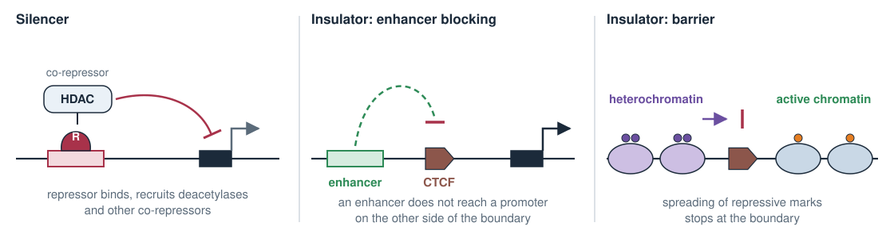
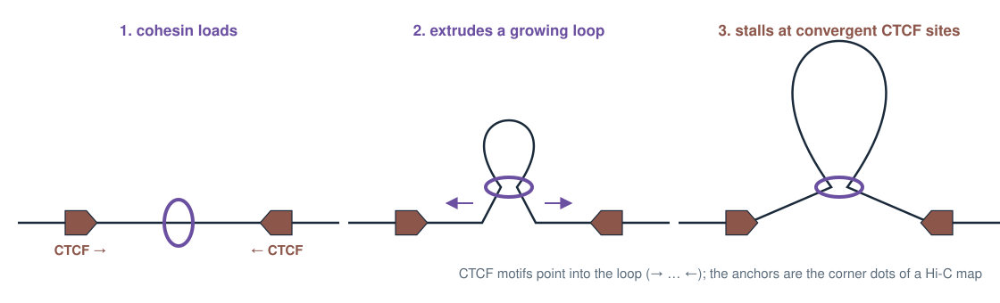
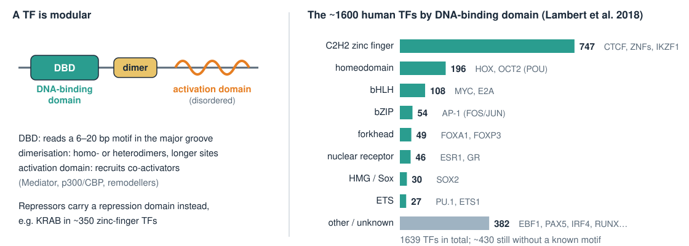
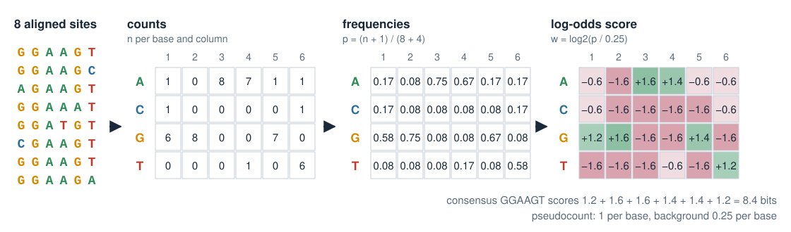
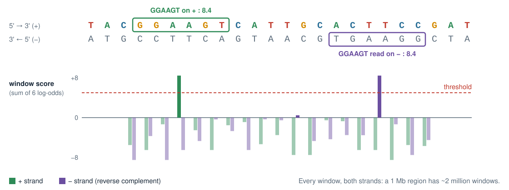
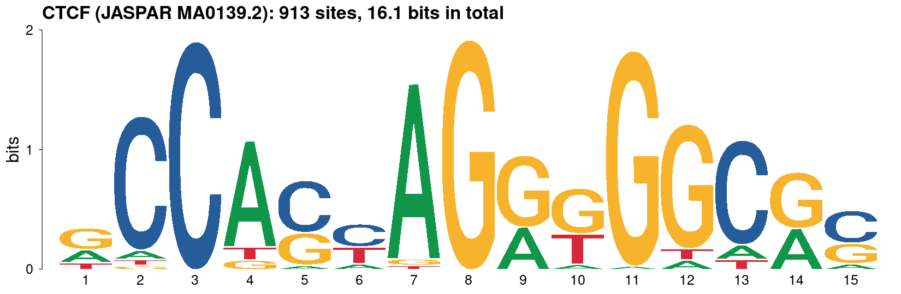
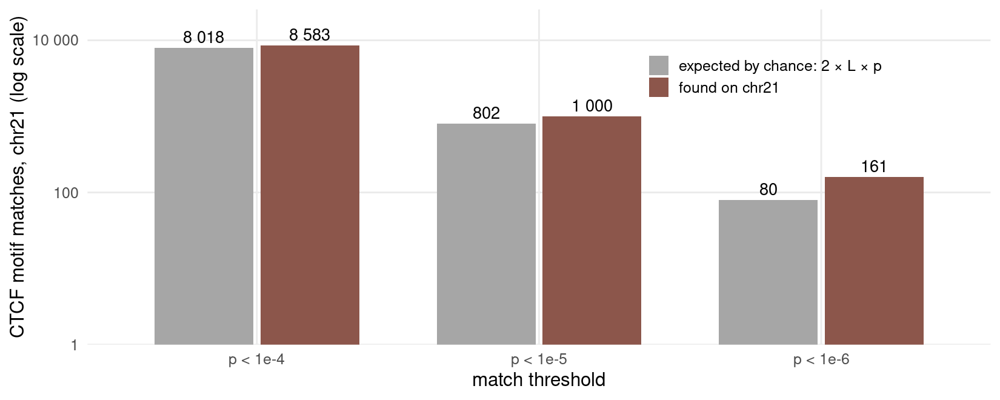
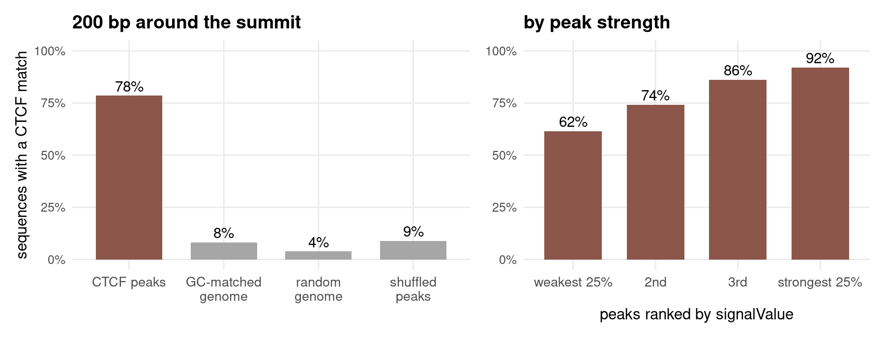
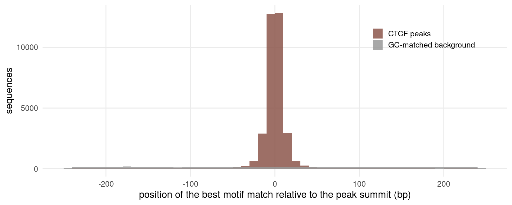
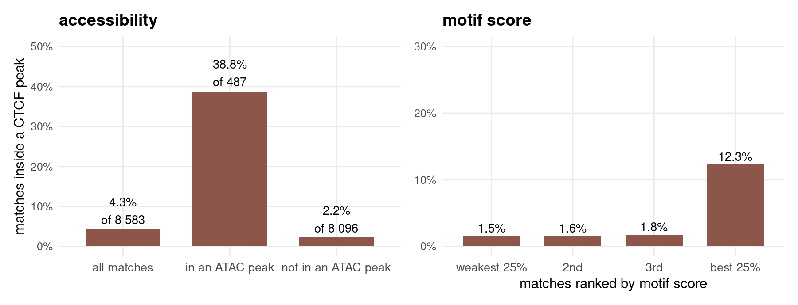
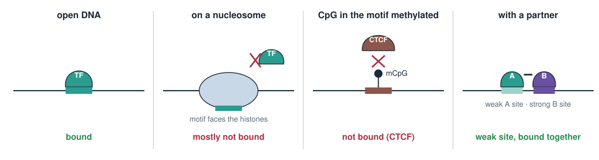
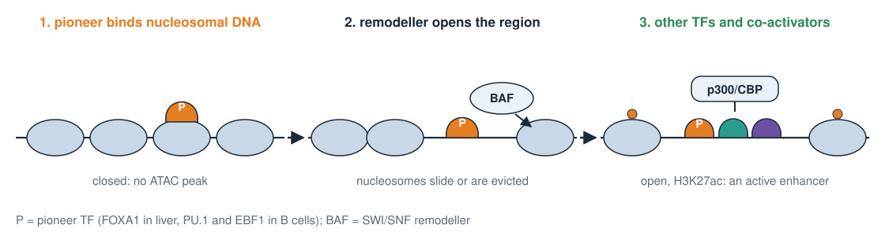
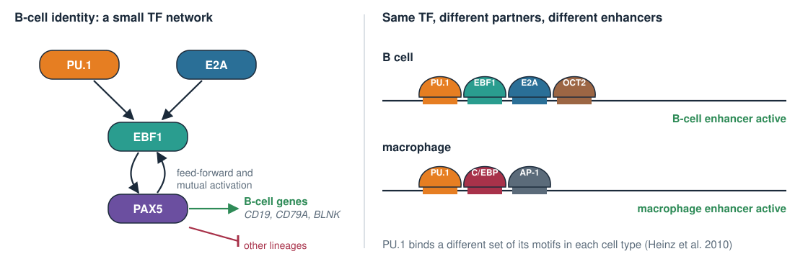
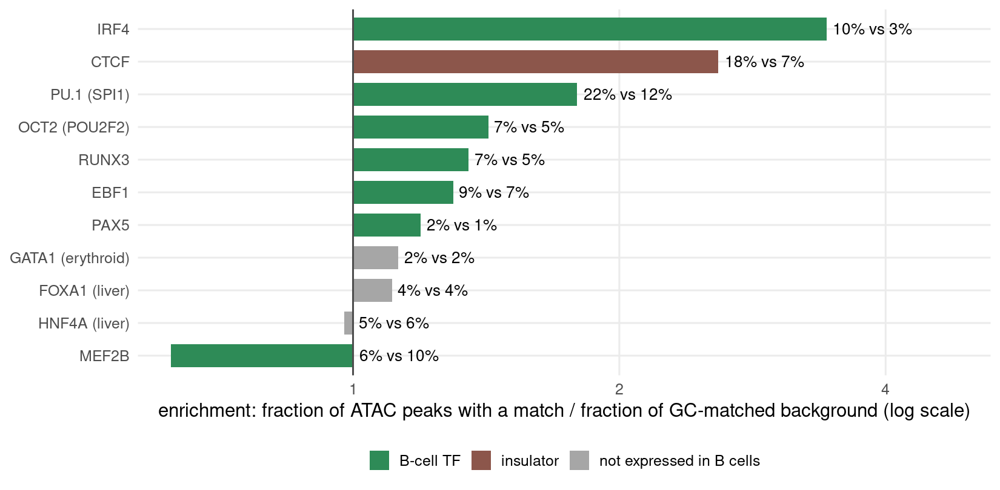
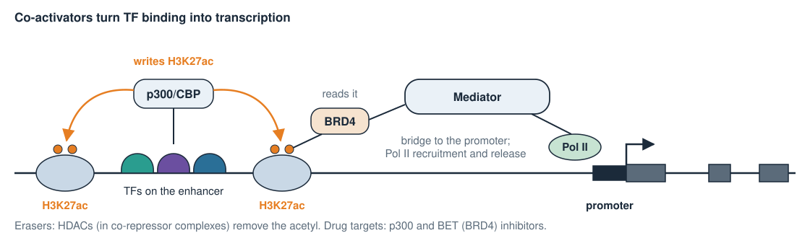
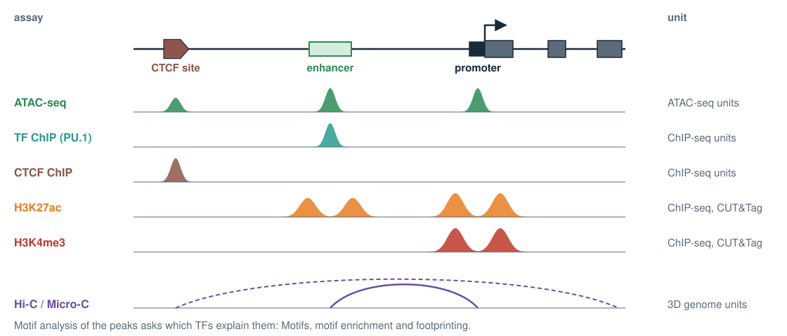
| idea | key fact |
|---|---|
| cis-regulatory elements | core promoter, enhancers, silencers, insulators: clusters of TF sites |
| core promoter | about −40 to +40; TATA, Inr, DPE; CpG-island (about half, broad, housekeeping) vs non-CpG (tissue-specific) |
| enhancer | activates at a distance (up to ~1 Mb), either orientation; often not the nearest gene |
| active enhancer | open core with TFs; H3K4me1 + H3K27ac on flanking nucleosomes; eRNAs |
| insulator | CTCF; loops between convergent CTCF sites by cohesin extrusion |
| TF | DNA-binding domain + effector domain; ~1600 in human |
| PWM | counts → frequencies (pseudocount) → log-odds \log_2(p/q); score = sum over positions |
| information content | 2 + \sum p \log_2 p per column; logo; chance match ≈ every 2^{IC} bp |
| binding | motif ≈ necessary, not sufficient: 4% of chr21 CTCF matches bound; accessibility, pioneers, partners |
| B cells | PU.1, E2A → EBF1 ↔︎ PAX5; combinations select enhancers |
Not required reading and not examined. For those who want the primary literature.